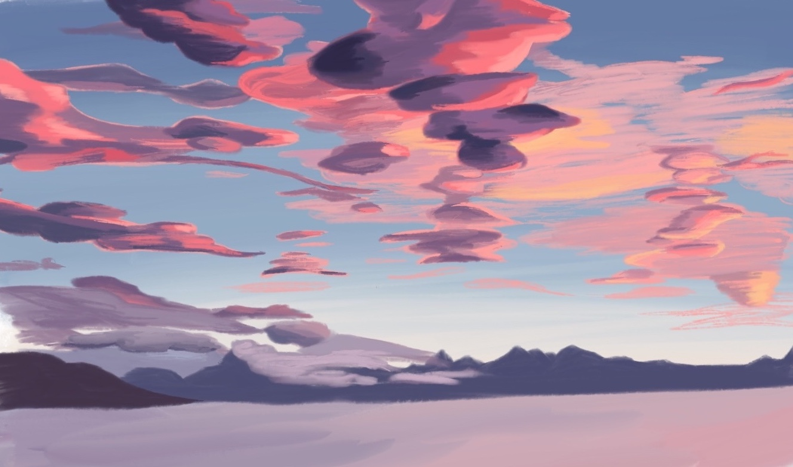

december 2023 family in graphite


summer 2023 pottery at catlin gabel


spring 2022 art and science of birds


digital
portraits in sharpie
quiet watercolor, digital

orchid in colored pencil, graphite, ink

colored pencil

watercolor


graphite

ink